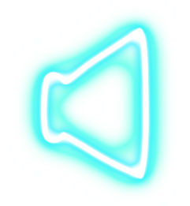
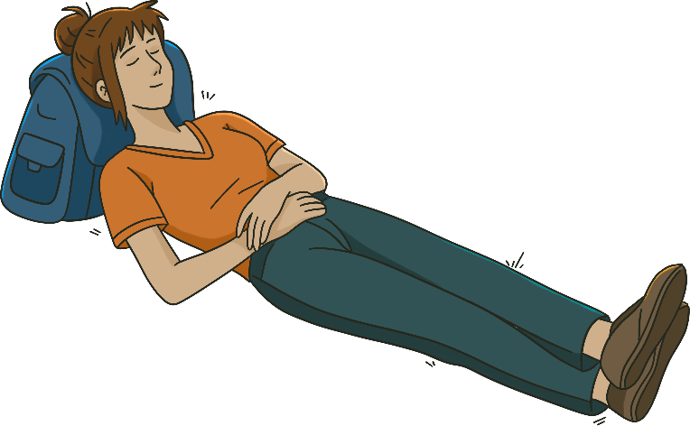
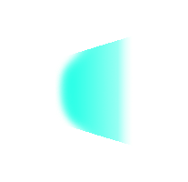
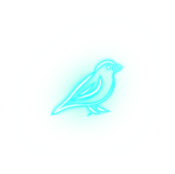
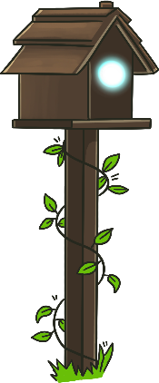
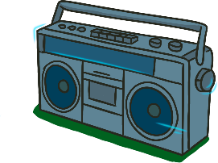
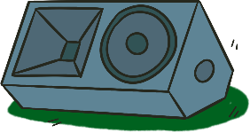
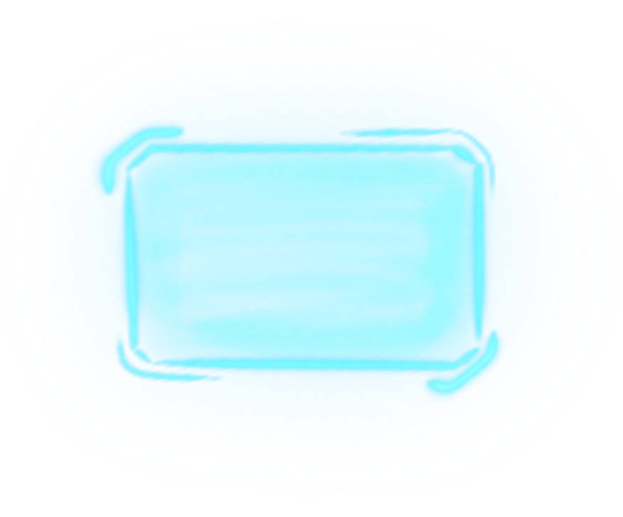

Bird Journal
Yükleniyor...
An international collaboration between Yıldız Technical University and the University of Tokyo, BirdHub Project connects two campuses through real-time bioacoustic monitoring and sonic interaction design. The project aims to raise ecological awareness and cultivate environmental literacy by engaging local communities with the acoustic life of urban birds.
This scene represents the Otağ-ı Hümayun Garden on Yıldız Technical University's Davutpaşa Campus. Listen to the live local soundscape, explore the birds visiting the campus, tune into the University of Tokyo's live soundscape via the radio, or switch directly to the other campus.